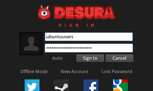
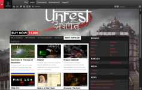
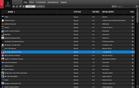

Desura
Dieser Artikel wurde für die folgenden Ubuntu-Versionen getestet:
Ubuntu 16.04 Xenial Xerus
Ubuntu 14.04 Trusty Tahr
Zum Verständnis dieses Artikels sind folgende Seiten hilfreich:
Desura  ist eine kommerzielle Vertriebsplattform für PC-Spiele, welche 2016 von OnePlay
ist eine kommerzielle Vertriebsplattform für PC-Spiele, welche 2016 von OnePlay  übernommen wurde. Der Client setzt auf wxWidgets und GTK+. Mit diesem können die käuflich erworbenen Spiele installiert und gestartet werden. Neben diesen stehen dem Nutzer auch eine Reihe von kostenlosen Spielen zur Verfügung. Für die Verwendung der Software ist eine Registrierung nötig. Diese kann über die Homepage oder die Software vorgenommen werden.
übernommen wurde. Der Client setzt auf wxWidgets und GTK+. Mit diesem können die käuflich erworbenen Spiele installiert und gestartet werden. Neben diesen stehen dem Nutzer auch eine Reihe von kostenlosen Spielen zur Verfügung. Für die Verwendung der Software ist eine Registrierung nötig. Diese kann über die Homepage oder die Software vorgenommen werden.
Hinweis:
Der neue Eigentümer OnePlay plant die Plattform im zweiten Quartal 2017 wieder in Betrieb zu nehmen.
|  |  |  |
| Sign In | GUI | Spieleliste |
Installation¶
Als Clienten steht Desurium und der offizielle Desura-Client zur Verfügung. Desurium ist das OpenSource-Projekt des offiziellen Desura-Clienten und wird stetig weiter entwickelt, während der offizielle Desura-Client unregelmäßig um die Entwicklungen aus Desurium ergänzt wird. Der offizielle Desura-Client unterscheidet sich lediglich im Markennamen und dem Markenlogo von Desurium.
Daher ist es empfehlenswert, die als "stabil" deklarierte Version von Desurium zu installieren.
Desurium¶
Tomasz Makarewicz stellt über Launchpad seine inoffiziellen Desurium-PPAs [2] zur Verfügung, die die aktuellste Desurium-Version enthalten. Allerdings ist derzeit nur ein Paket für Ubuntu 14.04 zu beziehen
Adresszeile zum Hinzufügen des PPAs:
ppa:makson96/desurium
Hinweis!
Zusätzliche Fremdquellen können das System gefährden.
Ein PPA unterstützt nicht zwangsläufig alle Ubuntu-Versionen. Weitere Informationen sind der  PPA-Beschreibung des Eigentümers/Teams makson96 zu entnehmen.
PPA-Beschreibung des Eigentümers/Teams makson96 zu entnehmen.
Damit Pakete aus dem PPA genutzt werden können, müssen die Paketquellen neu eingelesen werden.
Anschließend kann Desurium über das folgende Paket installiert [2] werden:
desurium (ppa)
 mit apturl
mit apturl
Paketliste zum Kopieren:
sudo apt-get install desurium
sudo aptitude install desurium
Nach der Installation kann Desurium über "Anwendungen → Spiele → Desurium" gestartet werden.
Nach dem Start nistet sich ein Icon in der Symbolleiste ein. Über einen Rechtsklick  kann die Programmoberfläche wieder nach vorne geholt ("Desurium") oder komplett beendet ("Exit") werden.
kann die Programmoberfläche wieder nach vorne geholt ("Desurium") oder komplett beendet ("Exit") werden.
Desura¶
Das Programm von Desura.com  herunterladen und in das Homeverzeichnis, z.B. nach ~/Spiele/desura, entpacken [1]. Anschließend den Updater über
herunterladen und in das Homeverzeichnis, z.B. nach ~/Spiele/desura, entpacken [1]. Anschließend den Updater über desura aufrufen [2]. Erst jetzt werden die eigentlichen Programmdateien heruntergeladen und im Installationsverzeichnis hinterlegt.
Anschließend das Paket [4]
libssl0.9.8 (universe)
mit apturl
Paketliste zum Kopieren:
sudo apt-get install libssl0.9.8
sudo aptitude install libssl0.9.8
installieren.
Das Programm kann anschließend über den Eintrag "Anwendungen -> Spiele -> Desura" gestartet werden.
Nach dem Start nistet sich ein Icon in der Symbolleiste ein. Über einen Rechtsklick kann die Programmoberfläche wieder nach vorne geholt ("Desura") oder komplett beendet ("Exit") werden.
Bedienung¶
Über die Navigationsleiste gelangt man schnell an die wichtigsten Funktionen.
| Navigationsleiste | |
| Icon | Beschreibung |
| Nachrichtencenter | |
| Einkaufswagen | |
| Informationen zu verfügbaren Updates. | |
| Liste abonnierter Threads. | |
Über die Reiter sind weitere Funktionen zu erreichen. Mit einem Rechtsklick können in den jeweiligen Reitern zusätzlich Untermenüs geöffnet werden, welche weitere Funktionen bieten. Einige dieser Funktionen können auch über einen Doppelklick  verwendet werden. So bewirkt dieser z.B. unter "Play" bei erstmaliger Ausführung die Installation des Spiels und beim nächsten Mal den Spielstart.
verwendet werden. So bewirkt dieser z.B. unter "Play" bei erstmaliger Ausführung die Installation des Spiels und beim nächsten Mal den Spielstart.
| Reiter | |
| Reiter | Beschreibung |
| "Eigener Nick" | Profilinformationen und "Freunde" verwalten. |
| "Play" | Ein Spiel aus der Liste kann hier gestartet werden. Der Status "Ready" / "Not Ready" gibt Auskunft darüber ob das Spiel bereits heruntergeladen wurde und der Kreis ob Aktuallisierungen verfügbar sind. Mitunter werden beim ersten Start eines Spiels zusätzliche Bibliotheken, welche für die Ausführung benötigt werden, heruntergeladen und man muss den Lizenzbestimmungen zustimmen. |
| "Games" | Im Reiter "Games" das gewünschte Spiel auswählen und auf die Schaltfläche "Buy" klicken. Im nächsten Schritt auf Checkout klicken, auswählen ob man einen Gutscheincode oder das Spiel erwerben möchte und abschließend Bezahlmethode wählen: PayPal Visa oder MasterCard. |
| "Community" | Gruppen |
| "Development" | Informationen Rund um die Entwicklung von Desura. |
| "Support" | Forum, Support, Tutorials ... aufrufen. |
Offline Modus¶
Im Offline Modus können die Installierten Spiele gespielt werden. Dieser Modus kann beim Start des Programms gewählt werden.
Konfiguration¶
Die Konfiguration kann im offiziellen Desura-Clienten über die blau hinterlegte und in Desurium über die grau hinterlegte Schaltfläche aufgerufen werden. Hier dann die "Settings" wählen.
| Konfiguration | |
| Reiter | Beschreibung |
| "General" | Sprache ändern |
| "Performance" | Einstellungen an der Leistung vornehmen. |
| "Theme" | Das Programmaussehen ändern. |
| "Beta" | Am Beta-Test teilnehmen. |
| "Games" | CDKey einlösen / System nach installierten Spielen scannen ... |
Deinstallation¶
Während das per PPA installierte Desurium über die Paketverwaltung deinstalliert werden kann, bringt der offizielle Desura-Client keine Deinstallationsroutine mit und muss manuell deinstalliert werden. Deshalb ist es nötig die vorhandenen Dateien selber zu löschen. Hier unter ~/.local/share/applications die Einträge desura-force.desktop und desura.desktop löschen. Anschließend die Verzeichnisse ~/Spiele/desura und ~/.desura aus dem Homeverzeichnis entfernen.
Tipps & Tricks¶
Humble Bundle / Indie Royale¶
Sofern man Käufer eines der bisher erschienenen Bundles ist können diese Spiele dem Account von Desura hinzugefügt werden. Hierzu den Link, welchen man beim Erwerb des Bundles per Email zugesendet bekommen hat öffnen und den Schlüssel notieren bzw. in die Zwischenablage kopieren.
Anschließend die Seite Play the bundle via Desura (Humble Bundle) oder Activate Product or Gift (Humble Bundle / Indie Royale) aufrufen und diesen eingeben bzw. einfügen.
Spiele¶
Die heruntergeladenen und installierten Spiele des offiziellen Desura-Clienten werden im Installationverzeichnis abgelegt, z.B. unter ~/Spiele/desura/common und die Spiele von Desurium werden unter ~/.desura/games abgelegt. Die Spiele können hier gesichert oder auch gestartet werden. Der Umweg über den Client ist nicht nötig. Sofern Spiele gesichert werden sollte man beachten, dass im Ordner .settings zusätzliche Bibliotheken gespeichert sein können.
Problemlösungen¶
offizielle Desura-Client startet nicht¶
Mitunter kann es vorkommen, dass der offizielle Desura-Client nicht startet. Im diesem Fall kann ein Update Abhilfe bringen, welches man im Menü unter "Spiele -> Desura (Force Update)"" einleiten kann. Sollte Desura immer noch nicht starten öffnet man das Installationsverzeichnis von Desura und verschiebt den Ordner common, welcher alle Spieledaten enthält, an einen beliebigen Platz und löscht anschließend den Ordner (z.B. ~/Spiele/desura) mit der Anwendung Desura.
Anschließend das Programm erneut von der Vertriebsplattform herunterladen und installieren. Nach erfolgreichem aufspielen der Software verschiebt man den Ordner common wieder in das neue Verzeichnis von Desura zurück.
Beim nächsten Start öffnet man den Reiter "Play". Alle vorhandenen Spiele tragen den Status Not Ready. Nun die gewünschten Spiele nacheinander mit einem Doppelklick anwählen und "Verify installed files and install missing ones" auswählen um ein komplettes herunterladen der Spiele zu verhindern.
Desurium startet nicht¶
Mitunter kann es vorkommen, dass Desurium nicht startet. Im diesem Fall öffnet man das Installationsverzeichnis benennt man man das Verzeichnis ~/.desura in z.B. ~/.desura_alt um, welches alle Spieledaten und Konfigurationsdateien für Desurium enthält.
Anschließend kann Desurium wieder gestartet werden, wodurch auch wieder das Verzeichnis ~/.desura angelegt wird. Daraufhin verschiebt man den Ordner games aus ~/.desura_alt wieder in das neu angelegt Verzeichnis ~/.desura.
Beim nächsten Start öffnet man den Reiter "Play". Alle vorhandenen Spiele tragen den Status Not Ready. Nun die gewünschten Spiele nacheinander mit einem Doppelklick anwählen und "Verify installed files and install missing ones" auswählen um ein komplettes herunterladen der Spiele zu verhindern.
Spiel startet nicht¶
Einige Spiele laufen unter DOSBox, Adobe Flash oder ScummVM.
Die benötigten Programme aus den Quellen installieren [3]:
adobeair (Canonical Partner, Adobe Air für Linux wird seit Juni 2011 nicht mehr weiterentwickelt - Updates für Sicherheitslücken sind daher nicht mehr verfügbar. )
dosbox (universe)
scummvm (universe)
mit apturl
Paketliste zum Kopieren:
sudo apt-get install adobeair dosbox scummvm
sudo aptitude install adobeair dosbox scummvm

Infobox¶
| Desura | |
| Kategorie: | Internet-Vertriebsplattform |
| Sprache: | |
| Veröffentlichung: | 2011+ |
| Entwickler: | DesuraNET Pty Ltd. |
| Systemvoraussetzungen: | - |
| Medien: | Download |
| Läuft mit: | nativ |

- Erstellt mit Inyoka
-
 2004 – 2017 ubuntuusers.de • Einige Rechte vorbehalten
2004 – 2017 ubuntuusers.de • Einige Rechte vorbehalten
Lizenz • Kontakt • Datenschutz • Impressum • Serverstatus -
Serverhousing gespendet von